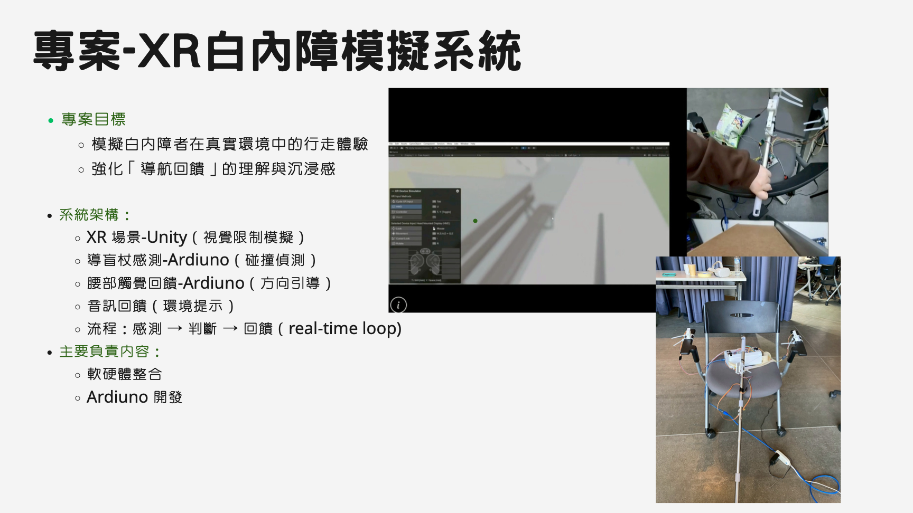

Project 03
專案 -XR 白內障模擬系統
這個專案的目標，是透過 XR 場景與多模態回饋，模擬白內障患者在真實環境中的行走體驗，讓使用者更具體感受到導航回饋與沉浸式互動設計的差異。它補強了我在研究、互動設計、系統整合與跨域協作上的完整能力。

專案類型
XR / HCI / HRI Interactive System
技術焦點
Unity、Arduino、Haptic Feedback、Real-time Loop
重點能力
軟硬整合 / 感測判斷 / 互動設計 / 跨域協作